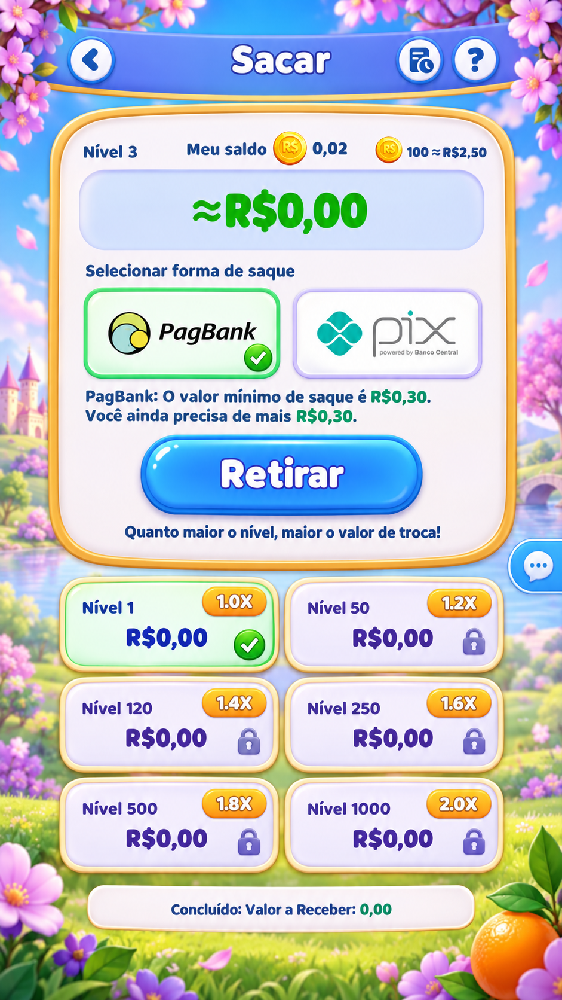
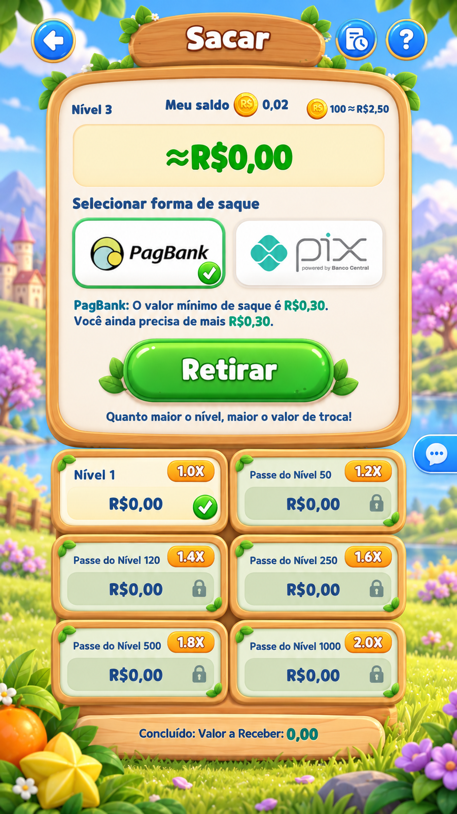
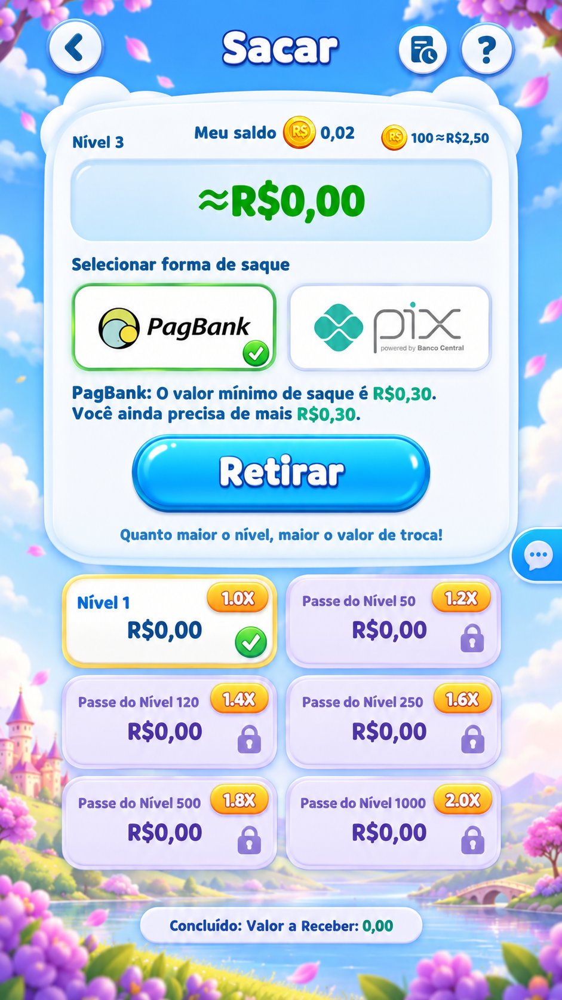
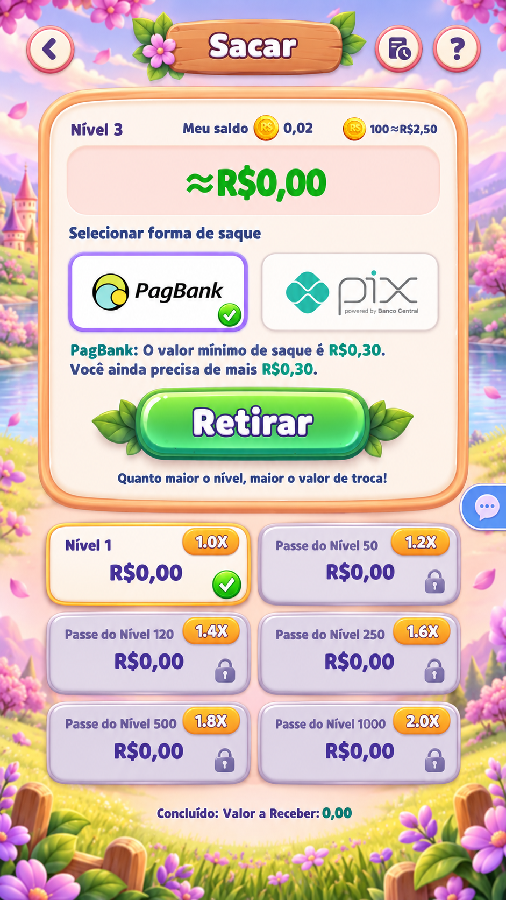
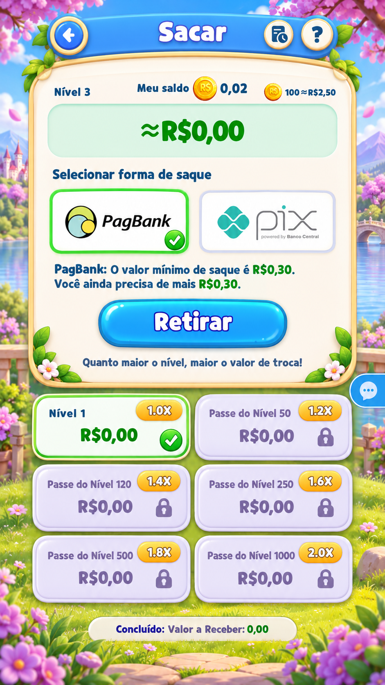

01 · 紫藤花园
紫藤花、象牙白与蓝色按钮，延续主游戏的童话花园气质。
下载完整图片 ↗参考水果 Puzzle 主场景的轻松氛围，保留原提现页面的信息结构。点击图片查看完整效果图。

紫藤花、象牙白与蓝色按钮，延续主游戏的童话花园气质。
下载完整图片 ↗
蜂蜜色浅木框与嫩绿按钮，呼应水果收集木托盘。
下载完整图片 ↗
云白卡片与通透天蓝背景，突出留白和清爽层级。
下载完整图片 ↗
蜜桃粉、奶油白与淡紫细节，温柔圆润的玩具质感。
下载完整图片 ↗
柔化湖景与浅薄荷面板，呈现舒缓的花园空间感。
下载完整图片 ↗